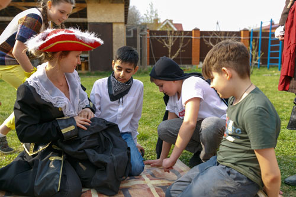

«Праздник в каждый дом»,
Предоставляем услуги организации детских праздников на нашей территории в очень интересных локациях.
Главная цель компании – сделать праздник незабываемым для детей и их родителей.
Девиз компании «Праздник в каждый дом»: Подарим волшебство для Ваших детей!
У нас есть множество красочных локаций, в которых можно организовать праздник любой сложности и размаха!
У нас есть волшебная палочка — это любовь к детям! С её помощью мы уже 7 лет исполняем детские мечты, создавая для них добрые праздники. Для нас нет событий «важных» и «не очень» — каждый праздник является ярким событием детства и надолго остается в памяти.
В нашем арсенале есть большой выбор развлечений для детей — самые модные квесты, дискотеки, познавательные и интеллектуальные программы. Благодаря ярким костюмам, слаженной работе профессиональных аниматоров и ответственному подходу к делу, мы постараемся провести Ваш праздник на высшем уровне и оставить приятные воспоминания.
Чудесного путешествия по Стране Волшебников! Надеемся на скорую встречу с вами!
Чтобы воспользоваться услугами компании необходимо:
1. Выбрать даты праздника;
2. Выбрать количество участников;
3. Выбрать желаемую локацию для праздника, соответствующую условиям выше;
4. Зарезервировать конкретную зону на территории выбранной локации;
5. Определить перечень дополнительных услуг;
6. Оформить заказ.
Акции
Скидка до 60%. За заказ зоны (от 25 человек) в локации «Черная жемчужина»
Устали от городского шума, хотите провести праздник за городом в живописной локации? Заказывайте место в локации «Черная жемчужина». Здесь вас и ваших детей ждет настоящая пиратская шхуна с настоящими пиратами!
Заказ от 25 до 30 человек:
— Скидка 40% на аренду при заказе в будний день
Заказ от 31 до 50 человек:
— Скидка 55% на аренду при заказе в будний день
Купон действует в будние дни при наличии свободных мест
Скидка до 51% при заказе услуг аниматоров. Уютное место для организации праздников «Поляна сказок»
Локация «Поляна сказок» расположена в живописной загородной местности на берегу чистого озера. Есть места для организации праздника как на открытом воздухе, так и под навесом.
Купон действует на следующие виды услуг:
— Скидка 51% для аренды зоны в локации «Поляна сказок» при условии заказа услуг аниматоров
Преимущества заказа именно этой локации:
— безопасность (территория локации является частной и охраняется);
— мало людей (площадь — 200 кв. м);
— защита от насекомых (территория кемпинга обработана от клещей);
— обустроенный тематический лагерь, в котором и взрослые найдут много возможностей для развлечений.
Обязательна предварительная запись по телефону.

Подпишитесь на акции
Светлана
Спасибо большое! Дети в бурных эмоциях, аниматор супер, даже взрослые участвовали, как это было все классно, энергично, здорово!
Успехов вам больших!
Марина
ДР ребенка 3 года, аниматоры молодцы, все очень хорошо подготовили!
Крош отработал на 5, все дети в восторге! Шоу мыльных пузырей с погружением чудесное и волшебное! Детям хотелось немного больше контакта с пузырями!
Ребят, только на счет подарка в конце шоу оговаривайте с родителями! Иногда шоколад маленьким детям дарить не стоит !
Алена
Всё очень понравилось.
Игры хорошие, аниматоры отличные, костюмы классные! Дети были восторге!!!
Наталия
Уже не первый раз заказываем праздник у вас, как всегда вы огромные специалисты и мастера своего дела!
Отлично всё: от приёма заказа, до финала праздника. Удачи и до новых встреч!!